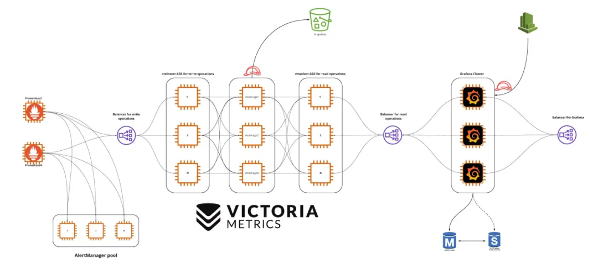

第一节 Prometheus远程存储VictoriaMetrics简介
VictoriaMetrics 是一个快速、经济高效且可扩展的监控解决方案和时间序列数据库，不仅可以作为 Prometheus 的远程存储，还可以使用其组件完全替换 Prometheus。

它主要有以下特性:
- 支持 Prometheus querying API,Graphite API. 可以在 Grafana 中直接使用
- 实现了基于 PromQL 的查询语言 - MetricsQL, 提供了一些高级功能
- 提供了全局视图，支持多个 Prometheus 实例或任何其他数据源同时向 VictoriaMetrics 写入数据，查询时数据可以保证唯一
-
占用资源少，且高性能.
-
支持多种方式获取 metrics. 如:
file_sd_configkubernetes_sd_configconsul_sd_config- 从 exporter 直接获取，与 prometheus 完全兼容。除
static_config外，还支持多种服务发现方式，如:- 通过 Prometheus 远程写入
- 通过 Post 请求将指定 JSON 格式的数据直接写入
2 单机模式
单机模式比较简单，直接下载二进制或 Docker 镜像 并使用指定的命令行启动.
单机模式可能用到的组件.
- victoria-metrics: metrics 数据抓取或存储
- vmalert: 按照指定的规则将 metrics 数据聚合或向 alertmanager 发送告警
- vmauth: 启用用户认证功能
以二进制为例，可以通过
-storageDataPath参数指定数据存储的目录。默认为victoria-metrics-data-retentionPeriod参数指定数据保存的时长。默认为 1 month-httpListenAddr参数指定监听的 HTTP 套接字。默认为 :8428-loggerTimezon参数指定日志的时区，默认为 UTC. 建议设置为 Asia/Shanghai-maxInsertRequestSize参数限制Prometheus remote_write API的请求大小。默认为 33554432 byte. 支持可选的单位为 KB, MB, GB, KiB, MiB, GiB-promscrape.config参数指定 Prometheus 配置文件路径。该配置文件只需要包含scrape_configs部分配置即可.(经测试VictoriaMetrics支持scrape_configs中的relabel_configs和metric_relabel_configs)-promscrape.config.strictParse参数设置是否会严格校验-promscrape.config指定的配置文件。默认情况下，不支持的字段会跳过，兼容 Prometheus 的配置文件-promscrape.configCheckInterval参数设置检查 Prometheus 配置文件是否变更的时间间隔。若变更，则重新加载。默认关闭-relabelConfig参数指定 relabel 的规则.-relabelDebug参数指定日志中是否指定 relabel 前后的 metrics. 多用于调试.-selfScrapeInstance参数设置抓取自身 metrics 时，instance 标签的值。默认 self-selfScrapeInterval参数设置抓取自身 metrics 的时间间隔-selfScrapeJob参数设置设置抓取自身 metrics 时，instance 标签的值。默认victoria-metrics
从参数看来，单机模式下的 VictoriaMetrics 可以
作为 Prometheus 的远程存储
启动 VictoriaMetrics 脚本如下:
# start_VictoriaMetrics.sh
cd ${victoria-metrics-home}
./victoria-metrics \
-storageDataPath <storageDataPath> \
-retentionPeriod <dataKeepTime> \
-maxInsertRequestSize <req_size> \
-httpListenAddr <IP:port> \
-loggerTimezon Asia/Shanghai &> victoria-metrics.log &
Prometheus 远程写入相关配置如下:
# prometheus.yml
# ...
remote_write:
- url: http://<victoriametrics-addr>:8428/api/v1/write
- 指定
promscrape.config直接抓取并存储 metrics.
这种方式启动与作为远程存储启动方式基本与存储方式大同小异，只需要指定对应配置文件即可。在直接抓取 metrics 过程中，VictoriaMetrics 需要一些其他的组件去实现 Prometheus 中的功能。比如
- Prometheus 中规则 (包括 metrics 聚合规则与告警规则) 需要 vmalert 组件来实现。且
vmalert只是发送告警到Alertmanager.vmalert支持的规则与 Prometheus 的规则一致。有关 vmalert 的使用，参见官方文档 - Prometheus 中认证相配置 需要 vmauth 组件来实现，参见官方文档
cd ${victoria-metrics-home}
./victoria-metrics \
-storageDataPath <storageDataPath> \
-retentionPeriod <dataKeepTime> \
-maxInsertRequestSize <req_size> \
-httpListenAddr <metrics_IP:port> \
-promscrape.config <prometheus.yml> \
-promscrape.configCheckInterval 1m \
-loggerTimezon Asia/Shanghai &> victoria-metrics.log &
./vmalert \
-httpListenAddr ":8880" \
-rule <record_rule_file or alert_rule_file> \
-datasource.url <metrics_IP:port> \
-notifier.url <AlertManager URL> \ # AlertManager URL
-remoteWrite.url <metrics_IP:port> \ # 聚合后的 metrics 写入的位置,一般为 victoria-metrics 的端口
-remoteRead.url <metrics_IP:port> \
-external.label <key=value> # 为聚合后的 metrics 添加标签
./vmauth \
-httpListenAddr ":8427" \
-auth.config <auth_config>
为了加强数据的安全性，可以将 victoria-metrics 存储监听在 localhost. 启用 auth. 配置一些自定义用户信息. vmauth 配置文件示例如下. Grafana 可使用该用户获取数据.
3 集群模式
VictoriaMetrics 集群模式相对来说比较复杂。主要由 vmstorage ,vminsert,vmselect 三部分组成，这三个组件每个组件都可以单独进行扩展。其中:
- vmstorage 负责提供数据存储服务
- vminsert 是数据存储 vmstorage 的代理，使用一致性 hash 算法进行写入分片
- vmselect 负责数据查询，根据输入的查询条件从 vmstorage 中查询数据
vmstorage 采用 shared-nothing 架构，优点是 vmstorage 的节点相互之间无感知，相互之间无需通信，不共享任何数据，增加了集群的可用性，简化了集群的扩展的难度与运维工作.
3-1 特性
VictoriaMetrics 集群模式支持
1 性能和容量水平扩展
- vminsert 和 vmselect 是无状态的。可以随时添加 / 删除。添加更多的 vminsert 和 vmselect 节点可以扩展数据写入与查询的效率
- vmstorage 节点保存抓取的数据，因此无法在不丢失数据的情况下删除它们。添加更多 vmstorage 节点可扩展集群容量。添加 vmstorage 的步骤如下:
- 使用与集群中现有节点相同的
-retentionPeriod启动新的 vmstorage 节点 - 使用包含
<new_vmstorage_host>的新-storageNode参数逐渐重新启动所有vmselect节点 - 使用包含
<new_vmstorage_host>的新-storageNode参数逐渐重新启动所有vminsert节点
- 使用与集群中现有节点相同的
支持时间序列数据的多个名称空间 (租户). 多个租户之间相互隔离
VictoriaMetrics 集群支持多个独立的租户。租户由 accountID 或 accountID:projectID标识，他们放在 url 中。如
http://<vminsert>:8480/insert/<accountID>/<suffix>,http://<vmselect>:8481/select/<accountID>/prometheus/<suffix>. 等.
- 每个 accountID 和 projectID 由范围
[0 .. 2^32)中的任意 32 位整数标识。如果不指定，则默自动分配为 0. - 当第一个数据点写入给定租户时，会自动创建租户
- 所有租户的数据均匀分布在可用的 vmstorage 节点中。这保证了当不同租户具有不同的数据量和不同的查询负载时，vmstorage 节点之间的负载均匀
- 数据库性能依赖于租户的数量，主要取决于所有租户中活动的时间序列的总数.
- VictoriaMetrics 不支持在单个请求中查询多个租户
支持数据副本
默认情况下，VictoriaMetrics 将副本写入到 -storageDataPath 指向的底层存储.
可以通过 vminsert 指定 -replicationFactor=N 标志位来启用数据副本。这保证在最多 N-1 个 vmstorage 节点不可用时，所有数据扔可用于查询。集群必须至少包含 2*N-1 个 vmstorage 节点.
启用复制后，vmselect 必须指定 -dedup.minScrapeInterval=1ms 命令行标志.
3-2 快速部署
使用 3 个节点部署相关服务。节点 IP 分别为 IP1, IP2, IP3
在每个节点上运行如下脚本来启动 vmstroage,vminsert,vmselect
#!/bin/bash
victoria_home="/data1/victoria-metrics"
bin=${victoria_home}/bin
conf=${victoria_home}/conf
data=${victoria_home}/data
log=${victoria_home}/log
LOG_LEVEL=INFO
TIMEZONE="Asia/Shanghai"
cd ${victoria_home}
${bin}/vmstorage-prod \
-httpListenAddr "nodeIP:8482" \
-storageDataPath ${data} \
-retentionPeriod 30d \
-vminsertAddr "nodeIP:8400" \ # insert 端口,由 vminsert 连接
-vmselectAddr "nodeIP:8401" \ # select 端口,由 vmselect 连接
-loggerTimezone ${TIMEZONE} \
-loggerLevel ${LOG_LEVEL} &> ${log}/storage.log &
${bin}/vminsert-prod \
-httpListenAddr "nodeIP:8480" \
-storageNode IP1:8400,IP2:8400,IP3:8400 \
-loggerTimezone ${TIMEZONE} \
-loggerLevel ${LOG_LEVEL} &> ${log}/insert.log &
${bin}/vmselect-prod \
-httpListenAddr "nodeIP:8481" \
-selectNode IP1:8481,IP2:8481,IP3:8481 \
-storageNode IP1:8401,IP2:8401,IP3:8401 \
-loggerTimezone ${TIMEZONE} \
-loggerLevel ${LOG_LEVEL} &> ${log}/select.log &
启动后，可以分别配置 Prometheus 和 Grafana 对 metrics 数据写入读取。详见官方文档
# prometheus.yml
remote_write:
- url: "http://<vminsert>:8480/insert/<accountID>/<suffix>"
# accountID 默认为 0
# suffix 可以为 `prometheus` 或 `prometheus/api/v1/write`
write_relabel_configs:
- source_labels: [__name__]
regex: 'go_.*'
action: drop
Grafana 数据源地址可配置为 http://<vmselect>:8481/select/<accountID>/prometheus. 此时 accountID 必须与 prometheus.yml 中配置的 accountID 一致.
最后可使用 vmauth 对数据读取时进行验证，保证数据安全性.